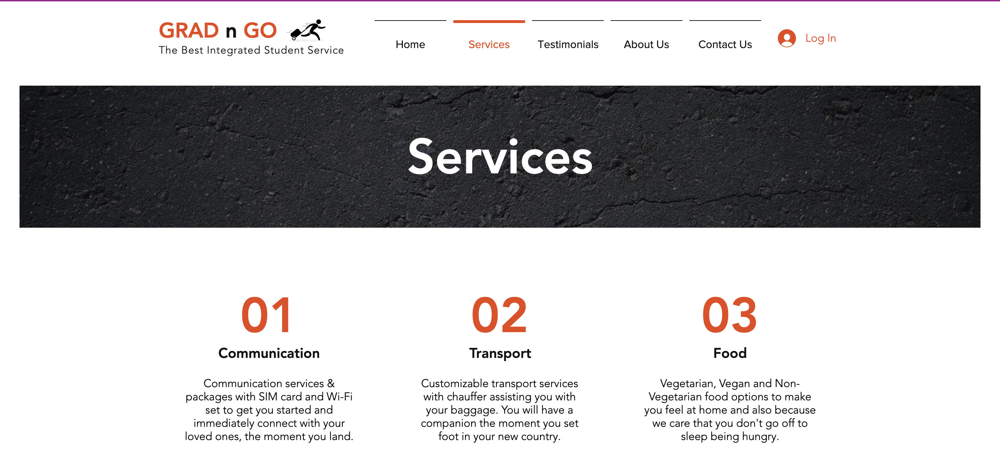
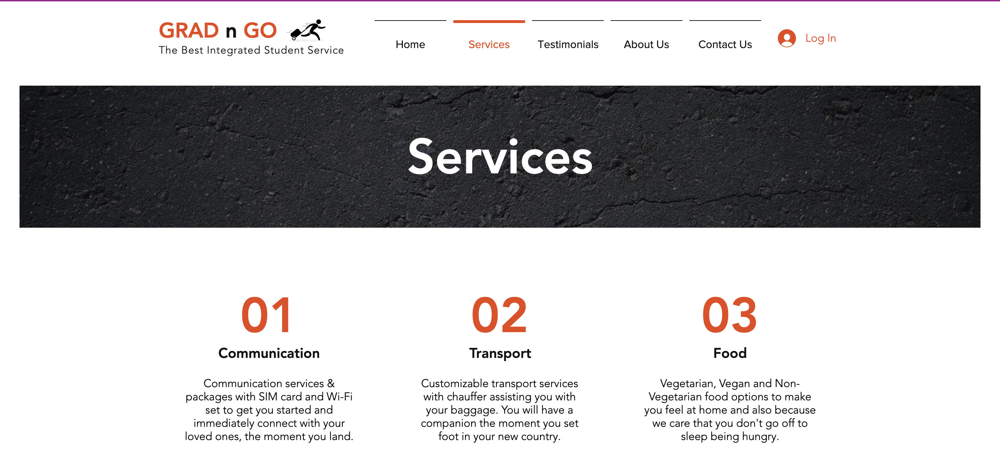

GRAD N GO
Context: Designing Information Experiences Duration:10 Weeks Team Members:Prem, Sindhuja, Deepthi
Problem Statement : Re-designing student experiences
We found an opportunity in redesigning an experience of our own. When we first arrived to the United States as students or professionals, we met with a lot of difficulties with respect to the food , transportation, inability to contact our loved ones and having to depend on others for our basic needs. Hence, we chose to redesign the experience of the first few days of arriving in a new country for studies/work.
User Research:
To gain more knowledge about the specific problems that students and other people face while arriving to the United States, we started interviewing 2 different sets of users a) Students b)Employees
We prepared a questionnaire containing 14 questions revolving around the problems people may have encountered, why they thought these were important, and what would they have done if they could have lived the experience differently. This gave us very useful insights into what the immediate needs of any person would be and what kind of solutions we could formulate based on the identified issues
Insights
We found that people coming here for employment faced more problems in logistical activities like opening a bank account, getting a social security number etc., students faced problems with more basic needs such as food, transportation from airport to their lodging and communication.
In the above figure, we created an affinity diagram based on the responses of our interviewees, to find emerging themes and patterns in their answers. Based on the segregations we found that the most important, immediate and recurring problems were as follows:
1) Communication: No immediate communication, absence of SIM cards & WiFi
2) Food: Not able to understand where to get food, also facing difficulties in what food to get.
3) Finance: How to open a bank account, what documents are needed, money transfer issues
4) Transportation: No clue about transportation from the airport, unable to pay for Uber/Taxi
5) Lack of information: Where to get groceries, where to go for information, how to get to places etc
6) Housing: Skeptical about signing lease from back home, stranded when they landed here due to no accommodation
7) Communal Feeling: Difficulty in being a cultural fit.
Reducing the Scope:
We reduced the scope of our product to focus solely upon the student segment. After segmenting my target customers, we focused on those themes that are crucial to student life. This was carried out by scoring each theme based on its importance and relevance to students. This led us to 3 most critical themes that are important.
1) Food
2) Transportation
3)Communication
Lean Canvas:
For any product to thrive, it is important to have a strong business plan. For this we created a Lean Canvas that laid the foundation of GradnGo and gave us a direction as to how our product would thrive. The image below clearly resonates our thought process with a business plan

Customer Journey Mapping:
After having the business plan ready, we decided to develop our primary persona and map his customer journey through our website. The detailed customer journey map represents our primary persona's journey start from searching this product to finally being the recipient of our service. It represents the touch-points as to how the customer reacts with out product and how the entire experience shapes out.

Website Application Prototype:
We used wix to rapidly develop a high fidelity prototype of our website through which users can access information regarding the service, look at the available plans and of course, buy our services as well. Below are some screenshots of the same:
 

Prototype Service Walkthrough:
To simulate as close as possible the experience of landing in a new country and the effectiveness of our service, we created a service walkthrough involving all the touch-points in our service.
To make the experience more realistic, we used two full sized bags loaded with some clothes. Additionally, we made a makeshift kiosk to serve as an information portal at the link station. To simulate the driving experience, we had a chauffeur who picked up students from the airport, made them comfortable in this new city and gave him a communication box and food packet